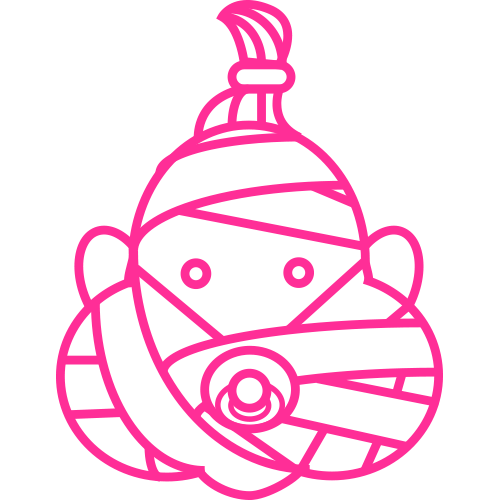

Møljøvenlighed

De miljømæssige og økonomiske
fordele ved genbrugspapir som
råvare afhænger af tilgængelighed,
transportafstand og kvaliteten
af det indsamlede materiale.
Genbrug af papir er en effektiv
ressourceudnyttelse,
da træfibrene anvendes
mere end én gang.

Kemikalier
Der stilles store krav til genbrugsfibres kvalitet og renhed, og hvert led i kæden er vigtigt (indsamling, sortering, transport, opbevaring, brug) for at garantere sikre og hygiejniske produkter.

Genbrugspapir kan fremstilles både af aviser, blade og papiraffald fra kontorer. Kvaliteten af det genindvundne papir udvælges for hvert produkt afhængigt af dets specifikke krav til egenskaber og hvidhed. Papiret opløses i vand, vaskes og behandles med kemikalier under høje temperaturer, hvorefter det sies for at fjerne urenheder.

Som en del af Essity
ligger vores fokus på at opfylde dine behov på en bæredygtig måde - hvormed vi sparer dig tid, penge og kræfter, så du kan fokusere på det, som er vigtigt for din forretning. Vores tilbud Hver gang du har brug for at aftørre, tørre, rengøre eller pudse, har vi det, du behøver. Vores udvalg af dispensere, refiller og tjenester er designet til at opfylde de specifikke behov for toiletter, industrimiljøer, køkkener og spiseområder. Så du kan koncentrere dig om de vigtige ting i din forretning. Find det, som virker bedst for dig, ved at søge i vores produkter eller anbefalinger.